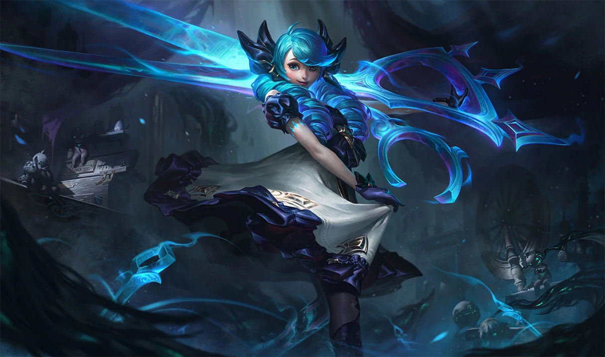

Lab04: My League of Legends Champion Pool
Description
Gwen a former doll brought to life with magic, posing with her giant scissor blades. With every attack she will cut you to ribbons!
.jpg File type
JPG or JPEG, is short for Joint Photographic Experts Group and is one of, if not the most common formats for photos. Originally created in 1992, JPEG uses 'lossy compression', which can cause a file to look much worse in quality if it doesn't have a lot of data to spare! It cannot be animated, or made transparent either.
Why Gwen?
Gwen is my least played champion of the three, however that doesn't mean I don't like her! She rounds out my champ pool quite nicely as she mostly does magic damage, as apposed to the physical damage of the other 2 champions in my repetoire. This gives me a handy pick for when my team only has members that do physical damage. She is also the cutest of the bunch!